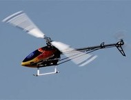
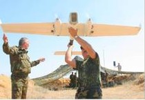
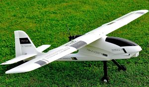

Система автоматического управления САУ9.2 (Мини исполнение)
| САУ9.2 ТБДР.468339.92.000 |
Назначение
Система САУ9.2 предназначена для автоматического, полуавтоматического и ручного управления подвижным объектом.
В настоящий момент разработаны конфигурации системы для следующих автоматических беспилотных систем:
- самолеты для взлета с полосы, посадки на полосу в полностью автоматическом режиме
- вертолеты с взлетом и посадкой в полностью автоматическом режиме
- катера
- аппараты легче воздуха
Система предназначена для подключения и управления практически любым типом полезной нагрузки по интерфейсам:
- 1-Wire
- RS485
- TTL UART
- RS232
- CAN
- минимальный вес и габариты (бортовое оборудование от 230 г)
- минимальное энергопотребление
- защита IP67
Основные функции и особенности системы
- автоматическое управление подвижным объектом
- управление исполнительными механизмами
- управление двигателем
- полуавтоматическое управление с автоматической стабилизацией подвижного объекта
- ручное управление через основной канал связи 928 мГц
- с пульта станции контроля и управления
- с пульта радиоуправления, через наземный модем по каналу 2,4 гГц
- управление подвижным объектом в аварийном режиме
- управление и мониторинг полезной нагрузки
- прием, передача телеметрии между станцией управления и подвижным объектом на расстояние до 100 км
- возможность счисления координат (расчета текущего положения) при потере сигнала GPS
- подробная телеметрия позволяющая в режиме реального времени контролировать состояние всех систем аппарата, параметры движения, метеоусловия и др.
- возможность исполнения клиентского кода и подключения плагинов
- система является распределённой, что позволяет продолжать работу при выходе из строя отдельных модулей, также возможно дополнительное дублирование для повышения отказоустойчивости
- самодиагностика системы
- тестирование полетного задания перед полетом
- режим симуляции (тренажер)
- обучение оператора в авиационном симуляторе с загрузкой виртуальной модели ЛА
- управление бортовым питанием
- стабилизация питания
- преобразование
- распределение, в том числе режим аварийного электроснабжения
- мониторинг бортового питания

Конфигурация и основные характеристики системы:
- 12 сервомашинок (ШИМ)
- 1-Wire интерфейс
- Интерфейс RS485
- Интерфейс RS232
- 12 цифровых входа (время, уровень)
- 12 RPM входа датчиков (датчик Холла)
- TTL UART интерфейс
- Сообщение между приборами - CAN
- 4 управляемых силовых выхода
(4.7 А @ 27 В, 68 мОм) - 12 входов-выходов общего назначения (MCU)
Физические характеристики
| Рабочая t, °C | Тип исполнения корпусов |
Материал корпусов |
Соединитель |
| -40 — 65 | IP67 |
Д16Т |
МР1-50 |
Электрические характеристики
| Питание системы, В | Защита | ||
| 5-27 | Буферизированная логика на всех цифровых каналах |
Электростатический разряд | Переполюсовка |
Примеры использования:
| Вертолет T-REX 700E 3GX UAV | Самолет ФТИ НАН РБ | Самолет аэродромного базирования |
|  |  |  |
САУ9.2 Мини исполнение. Состав системы*:
| № | Наименование | Обозначение | Шифр изделия | Вес, г | |
| 1 | Оборудование для носителя ниже 50 кг взлетной массы | ||||
| 1.1 | Блок навигации и передачи данных с СРНС | БНПД-СРНС | ТБДР.468339.90.331 | 180 | |
| 1.2 | Приемник воздушного давления мини с автоматическим подогревом | ПВДМ | ТБДР.468339.90.345 | 50 | |
| 1.3 | Ультразвуковой высотомер | УВ | ТБДР.431329.80.342 | 50 | |
| Все корпуса выполнены в герметичном исполнении. | |||||
*Внимание: ПО наземной станции может быть установлено на ваше оборудование. Рекомендуем использовать для управления наземную станцию (СКУ) нашего производства.